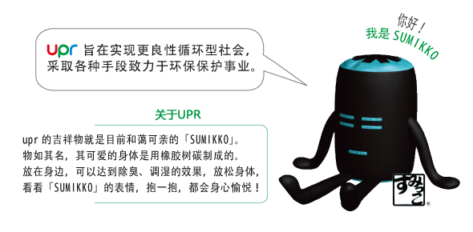
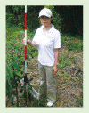
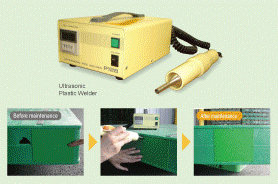

环境保护工作

造林
我们已听到有人说木制托盘对环境不利，事实上，木材加工时消耗的能源比其他材料少很多，是一种制造过程中环境影响极小的材料。树木在生长过程中，会吸收CO2，释放氧气。upr将木材定位为可持续资源，并在主要进口地区-亚洲地区毎年种植14ha（相当于三个东京巨蛋野球场的面积）的林木。我们推从和树木共生存。
原材料
 upr的木制托盘全部采用PEFC（森林认证制度）认证材料生产。通过该认证的木材，可保证是经过科学管理，可持续生长的森林的木材，使用这种木材，不会影响地球环境。
upr的木制托盘全部采用PEFC（森林认证制度）认证材料生产。通过该认证的木材，可保证是经过科学管理，可持续生长的森林的木材，使用这种木材，不会影响地球环境。
木制托盘的修理
 我们对每个返回仓库的托盘进行检查，清洗和修理。木制托盘的修理往往采用环保型植林木。只要维护良好，即可长期使用，减少废弃物排放。
我们对每个返回仓库的托盘进行检查，清洗和修理。木制托盘的修理往往采用环保型植林木。只要维护良好，即可长期使用，减少废弃物排放。
塑料托盘修理
修理行业内极少修理的塑料托盘。修补小孔使用超声波焊接机，经专用密封材料处理，防止水和灰尘的进入，可延长使用寿命。
循环利用
 完成使命的托盘可进行循环利用，制作成各种产品原材料。木制托盘采用专用粉碎装置进行粉碎处理，制作成板材和彩箱等材料的层压板。与厂家合作再生租赁用塑料托盘，可二次使用托盘，达到循环利用的目标。利用循环托盘后，每个托盘的二氧化碳排放量将降低3.5kg。
完成使命的托盘可进行循环利用，制作成各种产品原材料。木制托盘采用专用粉碎装置进行粉碎处理，制作成板材和彩箱等材料的层压板。与厂家合作再生租赁用塑料托盘，可二次使用托盘，达到循环利用的目标。利用循环托盘后，每个托盘的二氧化碳排放量将降低3.5kg。